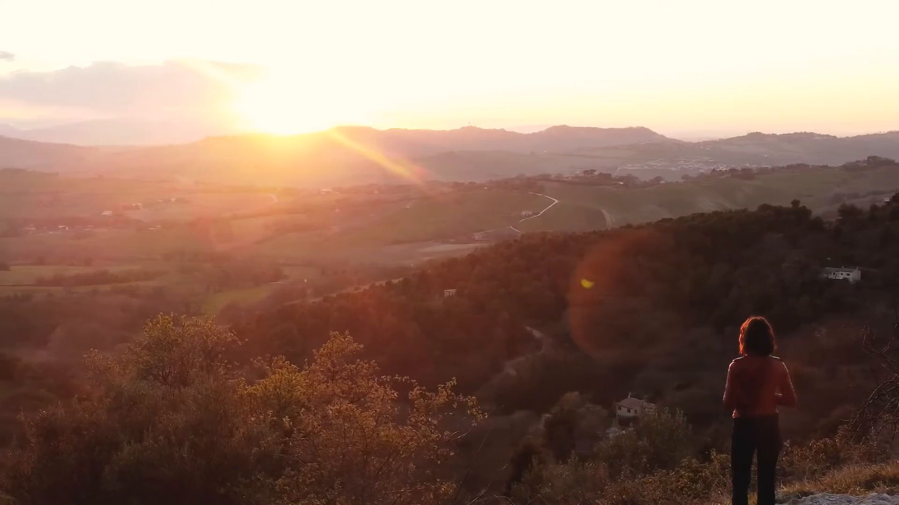
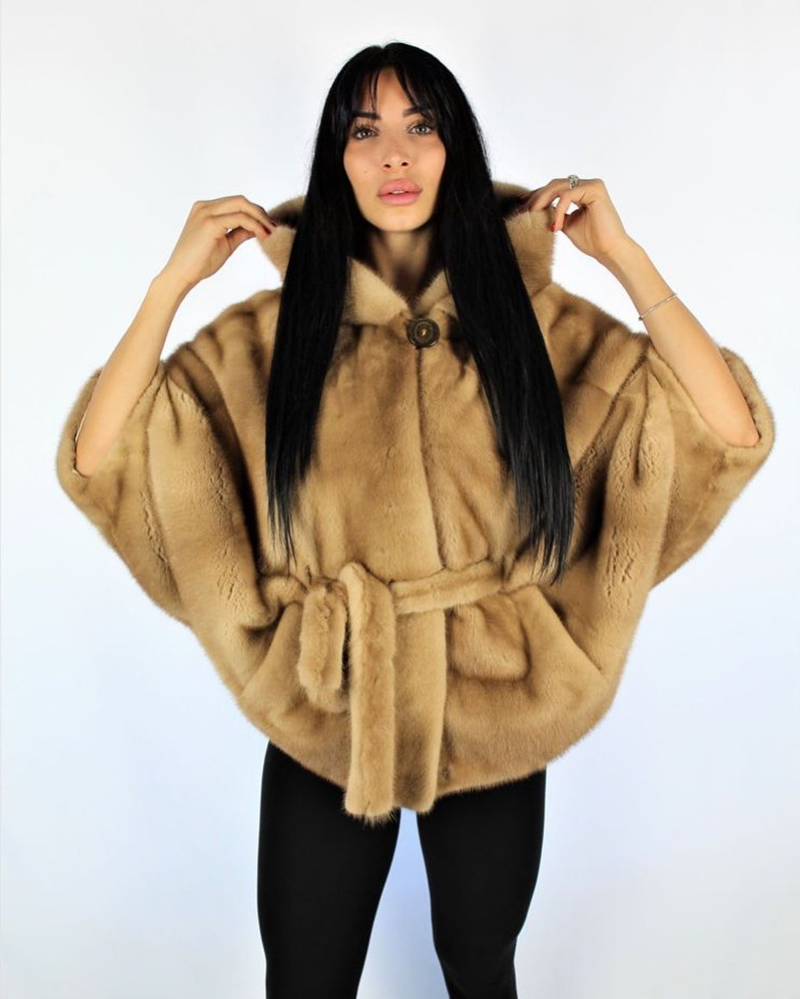
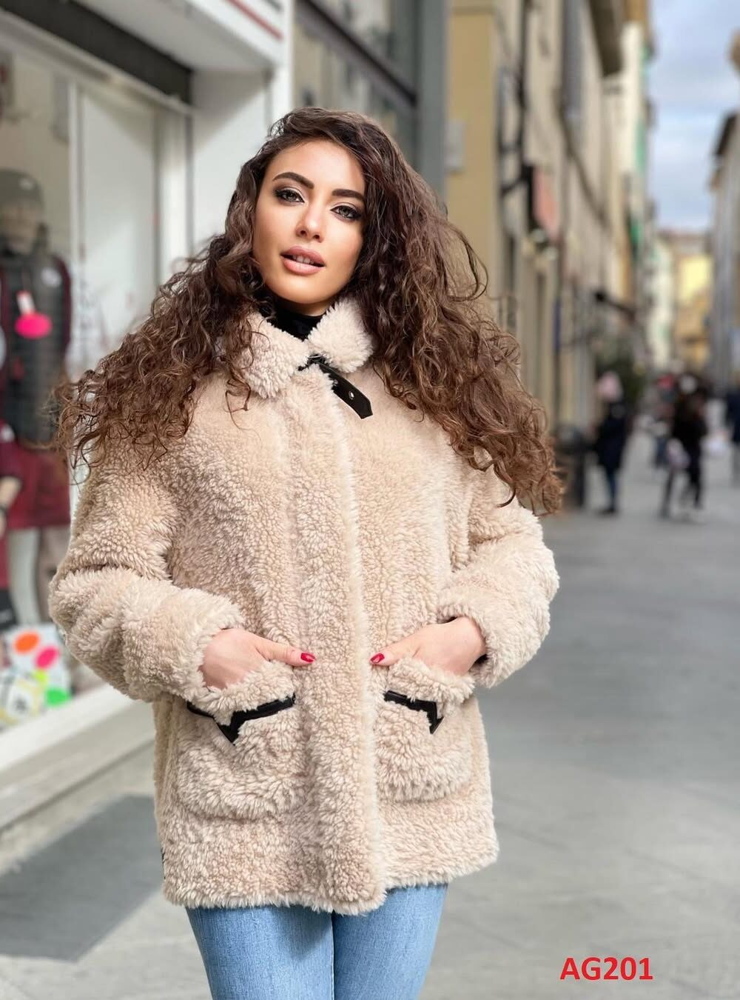
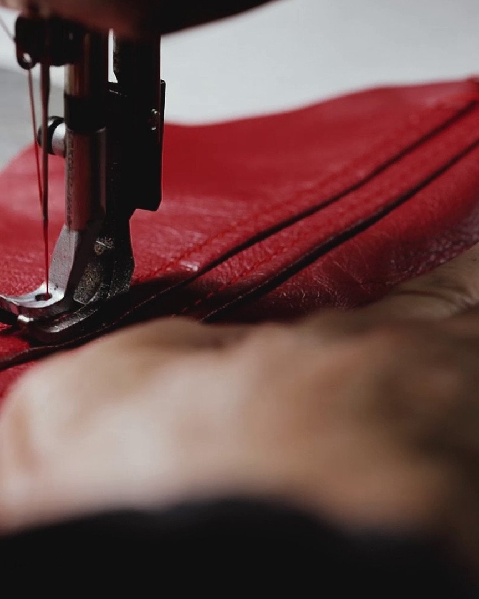
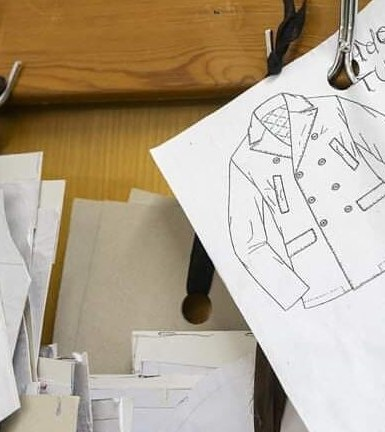
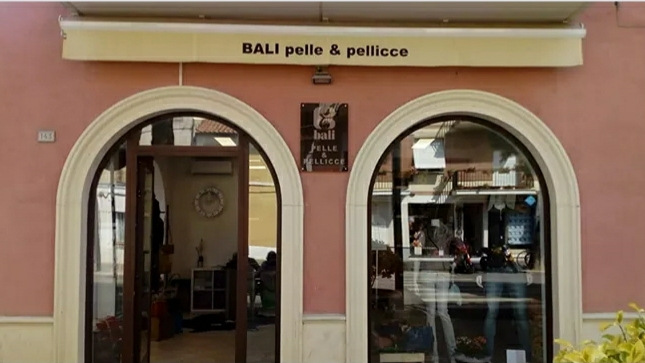

Ancona
Osimo
Via di Jesi, 13960027 Osimo (AN) 071 718712

Pelle & Pellicce — dagli anni '70
Capi in pelle, pelliccia, montone e cashmere, nati dalla cura artigianale e dal Made in Italy. Ti aspettiamo a Osimo e Porto Recanati.
Pellicceria Bali
Dove il design e l'artigianalità si incontrano. Ogni capo nasce da mani esperte e da un'idea precisa di eleganza.
La Pellicceria Bali è sinonimo di cura artigianale e Made in Italy nella realizzazione delle proprie creazioni, fin dagli anni '70.
Nei nostri negozi trovi una vasta gamma di capi in pelle, pelliccia, montone, eco-pelliccia e cashmere, insieme ad accessori in pelle e pelliccia, il tutto a prezzi molto vantaggiosi.
Collezioni
Pellicce, pelle, montone, cashmere e accessori: le novità che arrivano in negozio le pubblichiamo sui nostri profili. Scegli dove seguirci.

Instagram@bali_pelle.pellicce
TikTok@balipellicceriaHai visto un capo che ti piace? Mandaci il nome o uno screenshot su WhatsApp: ti diciamo disponibilità, colori e taglie.
Scrivici su WhatsAppDal laboratorio, dagli anni '70
Ogni punto, ogni taglio, ogni rifinitura: il tempo che dedichiamo a un capo è il tempo che lui ti restituirà.


Servizi
Nei nostri laboratori ci prendiamo cura dei tuoi capi, dal primo all'ultimo punto: sia di quelli acquistati da noi, sia di quelli che ami da sempre.
Strappi, cuciture, fodere e chiusure: ridiamo forma e vita ai capi in pelle e pelliccia.
Una pelliccia di ieri diventa un capo di oggi, con nuove linee e proporzioni più attuali.
Dal bozzetto al capo finito, disegnato sulle tue misure e sul tuo stile.
Trattamenti specifici per pelle, pellicce e montone, per conservarli al meglio nel tempo.
Due negozi nelle Marche, dove provare i capi con calma e farti consigliare.

Ancona
Macerata